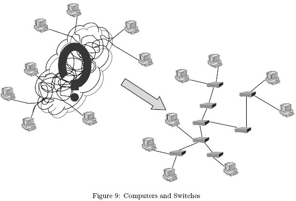

Home Page
F.A.Qs
Statistical Charts
Past Contests
Scheduled Contests
Award Contest
| Online Judge | Problem Set | Authors | Online Contests | User | ||||||
|---|---|---|---|---|---|---|---|---|---|---|
| Web Board Home Page F.A.Qs Statistical Charts | Current Contest Past Contests Scheduled Contests Award Contest | |||||||||
|
Language: Network Mess
Description Gilbert is the network admin of Ginkgo company. His boss is mad about the messy network cables on the floor. He finally walked up to Gilbert and asked the lazy network admin to illustrate how computers and switches are connected. Since he is a programmer, he is very reluctant to move throughout the office and examine cables and switches with his eyes. He instead opted to get this job done by measurement and a little bit of mathematical thinking, sitting down in front of his computer all the time. Your job is to help him by writing a program to reconstruct the network topology from measurements.
There are a known number of computers and an unknown number of switches. Each computer is connected to one of the switches via a cable and to nothing else. Specifically, a computer is never connected to another computer directly, or never connected to two or more switches. Switches are connected via cables to form a tree (a connected undirected graph with no cycles). No switches are 'useless.' In other words, each switch is on the path between at least one pair of computers. All in all, computers and switches together form a tree whose leaves are computers and whose internal nodes switches (See Figure 9). Gilbert measures the distances between all pairs of computers. The distance between two computers is simply the number of switches on the path between the two, plus one. Or equivalently, it is the number of cables used to connect them. You may wonder how Gilbert can actually obtain these distances solely based on measurement. Well, he can do so by a very sophisticated statistical processing technique he invented. Please do not ask the details. You are therefore given a matrix describing distances between leaves of a tree. Your job is to construct the tree from it. Input The input is a series of distance matrices, followed by a line consisting of a single '0'. Each distance matrix is formatted as follows.
N a11 a12 ... a1N a21 a22 ... a2N ... ... ... ... aN1 aN2 ... aNN  N is the size, i.e. the number of rows and the number of columns, of the matrix. aij gives the distance between the i-th leaf node (computer) and the j-th. You may assume 2 <= N <= 50 and the matrix is symmetric whose diagonal elements are all zeros. That is, aii = 0 and aij = aji for each i and j. Each non-diagonal element aij (i != j) satisfies 2 <= aij <= 30. You may assume there is always a solution. That is, there is a tree having the given distances between leaf nodes. Output For each distance matrix, find a tree having the given distances between leaf nodes. Then output the degree of each internal node (i.e. the number of cables adjoining each switch), all in a single line and in ascending order. Numbers in a line should be separated by a single space. A line should not contain any other characters, including trailing spaces. Sample Input 4 0 2 2 2 2 0 2 2 2 2 0 2 2 2 2 0 4 0 2 4 4 2 0 4 4 4 4 0 2 4 4 2 0 2 0 12 12 0 0 Sample Output 4 2 3 3 2 2 2 2 2 2 2 2 2 2 2 Source |
[Submit] [Go Back] [Status] [Discuss]
All Rights Reserved 2003-2013 Ying Fuchen,Xu Pengcheng,Xie Di
Any problem, Please Contact Administrator